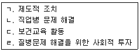

이용사 (2006-01-22 기출문제)
1과목: 임의 과목 구분
1. 정발술에서 헤어 드라이를 하는 주 목적은?
- 머리의 외형, 형태, 모양을 만들기 위해서
- 머리에 윤기를 내며 머리질을 좋게 하기 위해서
- 고객의 취향에 맞추기 위하여
- 블로 드라이 하면 모발이 상하지 않기 때문에
(정답률: 96%)

2. 가위 선택방법 중 부적당한 것은?
- 협신은 일반적으로 협신에서 날 끝으로 갈수록 자연스럽게 약간 내곡선상으로 된 것이 좋다.
- 날의 두께는 얇고 피보트가 약한 것이 좋다.
- 날의 견고성은 양날의 견고함이 동일한 것이 좋다.
- 재질이 도금된 것은 일반적으로 강철의 질이 좋지 않은 것이 많으므로 피해야 한다.
(정답률: 90%)
3. 다음 중 안면부 면체시술시 일반적으로 면도날과 피부면과의 각도로 가장 많이 적용되는 것은?
- 80~90° 정도
- 60~70° 정도
- 30~45° 정도
- 10~15° 정도
(정답률: 90%)
4. 헤어토닉 사용에 대한 다음 설명 중 틀린 것은?
- 두피의 가려움이 없어진다.
- 비듬의 발생을 막는다.
- 모근을 튼튼하게 하여 탈모를 예방한다.
- 두피용은 유성(油性)의 것만 있다.
(정답률: 82%)
5. 다음 중 머리숱이 많은 두발을 조발할시에 두발의 소밀정돈에 가장 편리한 가위는?
- 집게가위
- 단발가위
- 손톱가위
- 조발가위
(정답률: 82%)
6. 두발이 건조해지고 부스러지는 것을 방지해주는 효과가 가장 큰 비타민은?
- 비타민 A
- 비타민 B1
- 비타민 C
- 비타민 D
(정답률: 76%)
7. 샴푸시 물로 깨끗이 헹구어 낸 다음 마른 건포로 제일 먼저 닦아야 하는 곳은?
- 머리부위
- 눈부위
- 귀부위
- 목부위
(정답률: 67%)
8. 얼굴 및 두부 마사지 기법의 설명이 잘못된 것은?(오류 신고가 접수된 문제입니다. 반드시 정답과 해설을 확인하시기 바랍니다.)
- 유연법: 영양공급 작용
- 고타법: 신경작용 촉진
- 경찰법: 노폐물을 배출
- 진동법: 혈액순환 촉진
(정답률: 53%)
9. 드라이어의 사용법 및 사용시 주의사항 중 잘못된 것은?
- 가급적 높은 열로 빠른 시간에 한다.
- 두발의 수분은 적당한지 확인 후 한다.
- 사용 전 코드에 이상이 있는지 여부를 알아본다.
- 사용 후 플러그를 뽑아둔다.
(정답률: 92%)
10. 염모제를 바른 후 적정시간이 되어 색상을 확인하였더니 표시된 색상이 아니었다. 1차 적으로 어떤 조치를 취하여야 하는가?
- 염모제를 재 도포한다.
- 발색제만 더 도포한다.
- 염모제의 재확인이 필요하다.
- 시간을 더 연장한다.
(정답률: 57%)
11. 둥근 얼굴형에 가장 알맞는 두발의 가리마 비율은?
- 5:5
- 7:3
- 8:2
- 9:1
(정답률: 89%)
12. 아이론을 선정할 때 주의하여야 할 점 중 올바르지 못한 것은?
- 로드, 그루브, 스크루 및 양쪽 핸들에 흠이나 갈라진 것이 없어야 한다.
- 로드와 그루브의 접촉면이 매끄러우며 들쑥날쑥하거나 비틀어지지 않아야 한다.
- 비틀림이 없고 로드와 그루브가 바르게 겹쳐져야 한다.
- 가늘고 둥근 아이론의 경우에는 그루브의 홈이 얕고 핸들을 닫아 끝이 밀착되었을 때 틈새가 전혀 있어서는 안된다.
(정답률: 88%)
13. 두발의 탈색(Hair bleach)에 사용되는 과산화수소(H2O2)의 일반적인 농도는?
- 2% 용액
- 6% 용액
- 10% 용액
- 15% 용액
(정답률: 65%)
14. 두부(頭部)의 명칭 중 네이프(nape)는 어느 부위인가?
- 앞머리 부분
- 정수리 부분
- 후두부 부분
- 양옆 부분
(정답률: 82%)
15. 이용이 의료업에서 최초로 분리 독립된 시기는?
- 로마시대
- 르네상스시대
- 나폴레옹 제1제정시대
- 미합중국 독립시대
(정답률: 83%)
16. 다음 중 정발술에 해당이 없는 기구는 무엇인가?
- 빗
- 바리캉
- 드라이
- 아이론
(정답률: 61%)
17. 다음 세안시 유의할 점 중 틀린 것은?
- 물의 온도는 미지근하게 한다.
- 비누는 중성비누를 사용한다.
- 세안수는 연수가 좋다.
- 비누를 얼굴에 문질러 거품을 낸다.
(정답률: 85%)
18. 다음 중 가위숫돌은 어떤 상태의 숫돌이 가장 적합한가?
- 숫돌의 질이 무른 편이 좋다.
- 볼록하고 단단한 편이 좋다.
- 편평하고 거친 편이 좋다.
- 오목하고 단단한 편이 좋다.
(정답률: 47%)
19. 1955년 프랑스 이용기술 고등 연맹에서 발표한 쟝티욤라인(Gentilhome line) 작품의 설명으로 잘된 것은?
- 전체 스타일을 스퀘어로 각을 강조하였다.
- 귀족을 의미하는 뜻으로 작품명을 정하였다.
- 가리마를 기준으로 각각 원형을 이루도록 하였다.
- 전체가 수평을 이루어 중년에 맞는 스타일이다.
(정답률: 73%)
20. 환자에게 가장 알맞은 세발법에 해당되는 것은?
- 드라이 샴푸
- 에그 샴푸
- 토닉 샴푸
- 핫오일 샴푸
(정답률: 93%)
2과목: 임의 과목 구분
21. 다음 중 기생충과 중간 숙주와의 연결이 잘못된 것은?
- 무구조충 - 소
- 폐흡충 - 가재, 게
- 간흡충 - 민물고기
- 유구조충 - 물벼룩
(정답률: 76%)
22. 산업피로의 대표적인 증상은?
- 체온변화-호흡기변화-순환기계 변화
- 체온변화-호흡기변화-근수축력 변화
- 체온변화-호흡기변화-기억력 변화
- 체온변화-호흡기변화-사회적 행동변화
(정답률: 51%)
23. 법정전염병 중 제3군 전염병에 속하지 않는 것은?(관련 규정 개정전 문제로 여기서는 기존 정답인 1번을 누르면 정답 처리됩니다. 자세한 내용은 해설을 참고하세요.)
- B형간염
- 공수병
- 렙토스피라증
- 쯔쯔가무시증
(정답률: 80%)
24. 영양소의 3대작용에서 제외되는 사항은?
- 신체의 열량공급작용
- 신체의 조직구성작용
- 신체의 사회적응작용
- 신체의 생리기능조절작용
(정답률: 88%)
25. 식중독 발생의 원인인 솔라닌(Solanin)색소와 관련이 있는 것은?
- 버섯
- 복어
- 감자
- 모시조개
(정답률: 84%)
26. 현재 우리나라 근로기준법상 보건상 유해하거나 위험한 사업에 종사하지 못하도록 규정 되어 있는 대상은?
- 13세 미만의 어린이
- 18세 미만인자
- 임신중인 여자와 18세 미만인자
- 여자와 13세 미만인자
(정답률: 59%)
27. 법정전염병 중 제1군 전염병이 아닌 것은?(관련 규정 개정전 문제로 여기서는 기존 정답인 4번을 누르면 정답 처리됩니다. 자세한 내용은 해설을 참고하세요.)
- 페스트
- 장출혈성대장균감염증
- 세균성이질
- 디프테리아
(정답률: 32%)
28. 수은중독의 증세와 관련 없는 것은?
- 치은괴사
- 호흡장애
- 구내염
- 혈성구토
(정답률: 33%)
29. 우리나라의 공중 보건에 관한 과제 해결에 필요한 사항은?

- ㄱ.ㄴ.ㄷ
- ㄱ.ㄷ
- ㄴ.ㄹ
- ㄱ.ㄴ.ㄷ.ㄹ
(정답률: 52%)
30. 임신초기에 이환되면 태아에게 치명적인 영향을 주어 선천성 기형아를 낳을 수도 있는 질환은 무엇인가?
- 성홍열
- 풍진
- 홍역
- 디프테리아
(정답률: 48%)
31. 소독약의 구비조건에 해당하지 않는 것은?
- 높은 살균력을 가질 것
- 인축에 해가 없어야 할 것
- 저렴하고 구입과 사용이 간편할 것
- 기름, 알콜 등에 잘 용해되어야 할 것
(정답률: 82%)
32. 소독의 주된 원리는 다음 중 어느 것에 해당하는가?
- 균체 원형질 중의 탄수화물 변성
- 균체 원형질 중의 지방질 변성
- 균체 원형질 중의 단백질 변성
- 균체 원형질 중의 수분 변성
(정답률: 86%)
33. 생석회 분말소독으로 가장 적절한 소독 대상물은?
- 화장실 분변
- 전염병 환자실
- 채소류
- 상처
(정답률: 87%)
34. 소독약 10ml를 용액(물) 40ml에 혼합시키면 몇 %의 수용액이 되는가?
- 2%
- 10%
- 20%
- 50%
(정답률: 59%)
35. 다음 중 플라스틱 브러시의 소독방법으로 가장 알맞은 것은?
- 0.5%의 역성비누에 1분 정도 담근 후 물로 씻는다.
- 100℃의 끓는 물에 20분 정도 자비소독을 행한다.
- 세척 후 자외선 소독기를 사용한다.
- 고압증기 멸균기를 이용한다.
(정답률: 63%)
36. 어떤 소독약의 석탄산계수가 2.0 이라는 것은 무엇을 의미하는가?
- 석탄산의 살균력이 2 이다.
- 살균력이 석탄산의 2배이다.
- 살균력이 석탄산의 2%이다.
- 살균력이 석탄산의 120%이다.
(정답률: 65%)
37. 다음 중 크레졸의 설명으로 틀린 것은?
- 3%의 수용액을 주로 사용한다.
- 석탄산에 비해 2배의 소독력이 있다.
- 손, 오물 등의 소독에 사용된다.
- 물에 잘 녹는다.
(정답률: 30%)
38. 소독의 정의에 대한 설명 중 가장 올바른 것은?
- 모든 미생물을 열이나 약품으로 사멸하는 것
- 병원성 미생물을 사멸하던가 또는 제거하여 감염력을 잃게 하는 것
- 병원성 미생물에 의한 부패방지를 하는 것
- 병원성 미생물에 의한 발효방지를 하는 것
(정답률: 70%)
39. 다음 중 에탄올에 의한 소독 대상물로서 가장 적합한 것은?
- 유리 제품
- 셀룰로이드 제품
- 고무 제품
- 플라스틱 제품
(정답률: 64%)
40. 염소 소독의 장점이 아닌 것은?
- 소독력이 강하다.
- 조작이 간편하다.
- 냄새가 없다.
- 잔류효과가 크다.
(정답률: 61%)
3과목: 임의 과목 구분
41. 피부색소의 멜라닌을 만드는 색소형성세포는 어느 층에 위치하는가?
- 과립층
- 유극층
- 각질층
- 기저층
(정답률: 59%)
42. 다음 중 수분함량이 가장 많은 파운데이션은?
- 크림 파운데이션
- 리퀴드 파운데이션
- 스틱 파운데이션
- 스킨커버
(정답률: 52%)
43. 세안물로서 경수를 연수로 만들 때 사용하는 약품은?
- 붕사(borax)
- 에탄올(ethanol)
- 석탄산(phenol)
- 크레졸(cresol)
(정답률: 58%)
44. 땀띠가 생기는 원인으로 가장 옳은 것은?
- 땀띠는 피부표면에 있는 땀구멍이 일시적으로 막히기 때문에 생기는 발한기능의 장애 때문에 발생한다.
- 땀띠는 여름철 너무 잦은 세안 때문에 발생한다.
- 땀띠는 여름철 과다한 자외선 때문에 발생하므로 햇볕을 받지 않으면 생기지 않는다.
- 땀띠는 피부에 미생물이 감염되어 생긴 피부질환이다.
(정답률: 80%)
45. 피부 미백에 가장 많이 사용되는 비타민은?
- 비타민 A
- 비타민 B
- 비타민 C
- 비타민 D
(정답률: 91%)
46. 다음 중 비타민 A와 깊은 관련이 있는 카로틴을 가장 많이 함유한 식품은?
- 사과, 배
- 감자, 고구마
- 귤, 당근
- 쇠고기, 돼지고기
(정답률: 66%)
47. 다음 중 지성 피부 관리에 알맞는 크림은?
- 콜드크림
- 라노린크림
- 바니싱크림
- 에모리엔트크림
(정답률: 36%)
48. 흑갈색의 사마귀모양으로 40대 이후에 손등이나 얼굴 등에 생기는 것은?
- 기미
- 주근깨
- 흑피종
- 노인성반점
(정답률: 62%)
49. 진흙 성분의 머드팩에 주로 함유되어 있는 성분은?
- 카올린(kaolin)이나 벤토나이트(bentonite)
- 유황(sulphur)
- 캄포(camphor)
- 레시틴(lecithin)
(정답률: 37%)
50. 한선에 대한 설명 중 틀린 것은?
- 체온 조절기능이 있다.
- 진피와 피하지방 조직의 경계부위에 위치한다.
- 입술을 포함한 전신에 존재한다.
- 에크린선과 아포크린선이 있다.
(정답률: 74%)
51. 이ㆍ미용 영업의 영업정지 기간 중에 영업을 한 자에 대한 벌칙은?
- 2년 이하의 징역 또는 1000만원 이하의 벌금
- 2년 이하의 징역 또는 300만원 이하의 벌금
- 1년 이하의 징역 또는 1000만원 이하의 벌금
- 1년 이하의 징역 또는 300만원 이하의 벌금
(정답률: 78%)
52. 공중위생영업자가 위생관리 의무사항을 위반한 때의 당국의 조치사항으로 옳은 것은?
- 영업정지
- 자격정지
- 업무정지
- 개선명령
(정답률: 54%)
53. 임의로 이ㆍ미용영업소의 소재지를 변경하여 적발되었을때 1차위반 행정처분기준은?
- 개선명령
- 영업정지 1월
- 영업정지 2월
- 영업장 폐쇄명령
(정답률: 44%)
54. 다음 중 청문을 실시하여야 할 행정 처분 내용은?
- 시설개수
- 경고
- 시정명령
- 영업정지
(정답률: 83%)
55. 이ㆍ미용업의 개설자는 연간 몇 시간의 위생교육을 받아야 하는가?(관련 규정 개정전 문제로 여기서는 기존 정답인 1번을 누르면 정답 처리됩니다. 자세한 내용은 해설을 참고하세요.)
- 4시간
- 6시간
- 8시간
- 10시간
(정답률: 86%)
56. 이ㆍ미용업을 하는 영업소의 시설과 설비기준에 적합하지 않은 것은?
- 탈의실, 욕실, 욕조 및 샤워기를 설치하여야 한다.
- 소독기, 자외선살균기 등 기구를 소독하는 장비를 갖춘다.
- 영업소 안에는 별실을 설치하여서는 안된다.
- 위생관리상 응접장소와 작업장소 사이에 칸막이를 설치하여서는 안된다.
(정답률: 87%)
57. 이ㆍ미용사가 이ㆍ미용업소 외의 장소에서 이ㆍ미용을 한 경우의 1차 위반 행정처분 기준은?
- 경고
- 영업정지 10일
- 영업정지 1월
- 영업정지 2월
(정답률: 39%)
58. 공중위생 영업자는 그 이용자에게 건강상 ( )이 발생하지 아니하도록 영업관련 시설 및 설비를 안전하게 관리해야 한다. ( )안에 들어갈 단어는?
- 질병
- 사망
- 위해요인
- 전염병
(정답률: 51%)
59. 위생서비스 평가의 전문성을 높이기 위하여 필요하다고 인정하는 경우에 관련 전문기관 및 단체로 하여금 위생서비스 평가를 실시하게 할 수 있는 자는?
- 대통령
- 보건복지부장관
- 시장ㆍ군수ㆍ구청장
- 시ㆍ도지사
(정답률: 56%)
60. 위생교육을 받지 아니한 때 3차 위반시 적절한 행정처분 기준은?
- 경고
- 영업정지 5일
- 영업정지 10일
- 영업정지 30일
(정답률: 35%)